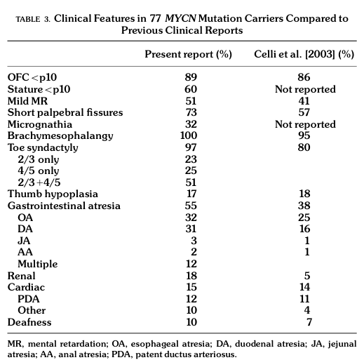

Feingold Syndrome (Mendelian disorder) — Disease Characteristics Research Report
Target disease
- Disease name: Feingold syndrome (Feingold syndrome type 1; Feingold syndrome type 2)
- Category: Mendelian (autosomal dominant developmental syndrome)
- MONDO ID: Not confirmed from retrieved evidence in this tool run (not present in extracted sources).
Executive overview
Feingold syndrome (FS) is an autosomal dominant congenital malformation syndrome defined by microcephaly, characteristic digital anomalies (classically brachymesophalangy of the 2nd and 5th fingers and toe syndactyly), variable learning disability/intellectual disability, and (for many patients) gastrointestinal atresias—especially esophageal and/or duodenal atresia. FS is genetically heterogeneous with two main molecular subtypes: FS1 due to MYCN haploinsufficiency and FS2 due to MIR17HG/miR-17~92 haploinsufficiency; phenotypic overlap is substantial, but GI atresia is a key discriminator favoring FS1. (marcelis2008genotype–phenotypecorrelationsin pages 1-3, nishio2024mycninhuman pages 7-8, nishio2024mycninhuman pages 1-2, grote2015expandingthephenotype pages 1-2)
1. Disease information
1.1 Definition and current understanding
- Feingold syndrome (FS) is described as a syndromic microcephaly condition characterized by digital anomalies, microcephaly, and esophageal/duodenal atresia, with variable intellectual disability (cognet2011dissectionofthe pages 1-2).
- In a large genotype–phenotype series of MYCN-positive individuals (n=77), the most common features were digital anomalies, microcephaly/small head size, and GI atresia (marcelis2008genotype–phenotypecorrelationsin pages 5-6, marcelis2008genotype–phenotypecorrelationsin media c1476c34).
1.2 Key identifiers (from retrieved literature)
- OMIM disease: 164280 (Feingold syndrome) (cognet2011dissectionofthe pages 1-2, marcelis2008genotype–phenotypecorrelationsin pages 1-3, klaniewska2021occurrenceofesophageal pages 1-2)
- Orphanet: ORPHA:391641 (klaniewska2021occurrenceofesophageal pages 1-2)
- FS2 / Feingold syndrome type 2: MIM 614326 referenced in MIR17HG-deletion reports (low2015tetralogyoffallot pages 1-2)
- Causal gene OMIM (FS1): MYCN (MIM 164840) (cognet2011dissectionofthe pages 1-2, samara2026prenataldiagnosisof pages 2-5)
Not found in retrieved evidence: ICD-10/ICD-11 codes, MeSH descriptor, MONDO ID.
1.3 Synonyms / alternative names
- “Feingold syndrome”, “Feingold syndrome type 1 (FS1)”, “Feingold syndrome type 2 (FS2)” (samara2026prenataldiagnosisof pages 2-5, nishio2024mycninhuman pages 1-2, low2015tetralogyoffallot pages 1-2).
1.4 Evidence provenance
The information summarized here is derived primarily from aggregated case series and gene-identified cohorts (e.g., MYCN-positive series and locus studies) and secondarily from individual case reports (familial atresia presentations, prenatal diagnosis). (cognet2011dissectionofthe pages 1-2, marcelis2008genotype–phenotypecorrelationsin pages 5-6, huynh2023geneticscornerfamiliala pages 1-2)
2. Etiology
2.1 Disease causal factors
Genetic causes (primary): - FS1: heterozygous loss-of-function (LoF) variants or deletions in MYCN leading to haploinsufficiency (nishio2024mycninhuman pages 1-2, samara2026prenataldiagnosisof pages 2-5). - FS2: heterozygous deletions affecting MIR17HG, which encodes the miR-17~92 microRNA cluster, leading to haploinsufficiency (low2015tetralogyoffallot pages 1-2, grote2015expandingthephenotype pages 1-2).
2.2 Risk factors
- The main “risk factor” is carrying a pathogenic variant (familial autosomal dominant transmission), as illustrated by multigenerational families with MYCN frameshift variants and recurrent atresias (klaniewska2021occurrenceofesophageal pages 1-2, huynh2023geneticscornerfamiliala pages 1-2).
2.3 Protective factors
- No genetic or environmental protective factors were identified in the retrieved evidence.
2.4 Gene–environment interactions
- No gene–environment interaction data were identified in the retrieved evidence.
3. Phenotypes
3.1 Core phenotypes (with frequencies where available)
A major quantitative synthesis comes from a cohort of 77 patients with MYCN abnormalities (FS1) (marcelis2008genotype–phenotypecorrelationsin pages 5-6, marcelis2008genotype–phenotypecorrelationsin media c1476c34).
Key frequencies (FS1, MYCN-positive, n=77): - Brachymesophalangy: 100% (marcelis2008genotype–phenotypecorrelationsin pages 5-6, marcelis2008genotype–phenotypecorrelationsin media c1476c34) - Toe syndactyly: 97% (marcelis2008genotype–phenotypecorrelationsin pages 5-6, marcelis2008genotype–phenotypecorrelationsin media c1476c34) - Microcephaly / small head size (OFC <10th percentile): 89–90% (marcelis2008genotype–phenotypecorrelationsin pages 5-6, marcelis2008genotype–phenotypecorrelationsin media c1476c34) - GI atresia (any): 55% (esophageal 32%; duodenal 31%; multiple atresias 12%) (marcelis2008genotype–phenotypecorrelationsin pages 5-6, marcelis2008genotype–phenotypecorrelationsin media c1476c34) - Short palpebral fissures: 73% (marcelis2008genotype–phenotypecorrelationsin pages 5-6, marcelis2008genotype–phenotypecorrelationsin media c1476c34) - Learning disability / mild-to-moderate intellectual disability: ~50% (marcelis2008genotype–phenotypecorrelationsin pages 5-6) - Renal anomalies: 18% (marcelis2008genotype–phenotypecorrelationsin pages 5-6) - Cardiac anomalies: 15% (marcelis2008genotype–phenotypecorrelationsin pages 5-6)
FS2 phenotype summary (MIR17HG deletions): - A 2015 review/case report stated that by that time 10 individuals with deletions involving MIR17HG had been described, and “those ten all had microcephaly, short stature, brachymesophalangy, and learning disabilities.” (grote2015expandingthephenotype pages 1-2) - FS2 is often described as overlapping with FS1 but generally lacking GI atresia (grote2015expandingthephenotype pages 1-2, grote2015expandingthephenotype pages 6-7).
3.2 Age of onset and progression
- Phenotypes are typically congenital (microcephaly, digital anomalies, GI atresia). In one FS series, postnatal microcephaly was described as becoming constant after early childhood even if head circumference may be near-normal at birth in some (cognet2011dissectionofthe pages 1-2).
3.3 Quality-of-life and functional impact
- GI atresias can require urgent neonatal surgery and may drive morbidity (huynh2023geneticscornerfamilial pages 2-4, laymanpleet2007feingoldsyndomea pages 1-3).
- Children with repaired esophageal atresia may experience complications such as anastomotic stricture requiring repeated dilations and episodic feeding/swallowing issues, affecting daily functioning (klaniewska2021occurrenceofesophageal pages 1-2).
3.4 HPO term suggestions (non-exhaustive)
- Microcephaly (HP:0000252) (marcelis2008genotype–phenotypecorrelationsin pages 5-6)
- Brachymesophalangy (e.g., HP:0004100 / “Brachymesophalangy of fingers”) (cognet2011dissectionofthe pages 1-2, marcelis2008genotype–phenotypecorrelationsin pages 5-6)
- 2–3 toe syndactyly / 4–5 toe syndactyly (HP:0004691 / HP:0004689 or related toe syndactyly terms) (marcelis2008genotype–phenotypecorrelationsin pages 5-6)
- Esophageal atresia (HP:0002032) (cognet2011dissectionofthe pages 1-2, marcelis2008genotype–phenotypecorrelationsin pages 5-6)
- Duodenal atresia (HP:0002249) (marcelis2008genotype–phenotypecorrelationsin pages 5-6, huynh2023geneticscornerfamilial pages 1-2)
- Intellectual disability / learning disability (HP:0001249 / HP:0001328) (marcelis2008genotype–phenotypecorrelationsin pages 5-6)
- Short palpebral fissures (HP:0000584) (marcelis2008genotype–phenotypecorrelationsin pages 5-6)
- Short stature (HP:0004322) (marcelis2008genotype–phenotypecorrelationsin pages 5-6)
4. Genetic / molecular information
4.1 Causal genes
- MYCN (FS1): LoF variants/deletions causing haploinsufficiency (nishio2024mycninhuman pages 1-2, marcelis2008genotype–phenotypecorrelationsin pages 1-3).
- MIR17HG (FS2): deletions affecting miR-17~92 cluster (low2015tetralogyoffallot pages 1-2, grote2015expandingthephenotype pages 1-2).
4.2 Variant spectrum (FS1)
In the MYCN-related genotype–phenotype analysis, pathogenic variation included premature termination codons/frameshifts and missense variants in the DNA-binding domain; deletions were also observed. (marcelis2008genotype–phenotypecorrelationsin pages 1-3, marcelis2008genotype–phenotypecorrelationsin pages 4-5, marcelis2008genotype–phenotypecorrelationsin pages 5-6)
4.3 Variant classification standards
- A recent (2026) MYCN case report explicitly referenced applying ACMG/AMP variant classification with ACGS 2024 refinements (useful as an implementation example for modern labs), but this is outside the user-prioritized 2023–2024 window (torre2026expandingthemycn pages 2-5).
4.4 Allele frequencies / population databases
- Specific gnomAD allele frequencies were not extractable from the retrieved evidence.
4.5 Somatic vs germline
- FS is a germline developmental disorder; MYCN is also a cancer gene somatically, but FS pathogenesis is described in the retrieved evidence as germline haploinsufficiency (nishio2024mycninhuman pages 1-2).
4.6 Modifier genes / dual diagnoses
- Severe or atypical phenotypes may reflect additional genetic diagnoses beyond MYCN; a 2021 series reported one FS1 patient with severe intellectual disability who had an MYCN variant plus a pathogenic GNAO1 variant, suggesting “further genetic testing” in severe cases (tedesco2021clinicalandmolecular pages 1-2).
4.7 Epigenetics / chromosomal abnormalities
- Not a primary feature in the retrieved evidence; however, chromosomal microarray detects pathogenic deletions encompassing MYCN (2p24.3) or MIR17HG (13q31.3) (samara2026prenataldiagnosisof pages 2-5, low2015tetralogyoffallot pages 1-2).
5. Environmental information
No specific environmental, lifestyle, or infectious contributors were identified in the retrieved evidence, consistent with FS being a primarily genetic disorder.
6. Mechanism / pathophysiology
6.1 High-level causal chain (current model)
FS1 (MYCN haploinsufficiency): reduced MYCN transcription-factor dosage perturbs embryonic proliferation/differentiation programs in developing brain and limb and may contribute to foregut/midgut developmental anomalies, yielding microcephaly, digital anomalies, and GI atresias (nishio2024mycninhuman pages 1-2, lim2023transcriptionfactorsin pages 10-11).
FS2 (miR-17~92 haploinsufficiency): reduced MIR17HG/miR-17~92 dosage disrupts developmental gene regulation in skeletal and growth pathways, producing overlapping skeletal/growth phenotypes (low2015tetralogyoffallot pages 1-2, grote2015expandingthephenotype pages 1-2).
6.2 Molecular pathways and cell processes (with model-system evidence)
A 2024 mechanistic review synthesized evidence that MYCN regulates miR-17~92 and that FS1 and FS2 can be mechanistically distinct despite overlap: - “the expression of miR-17-92 … is controlled with transcriptional regulation by MYCN” (nishio2024mycninhuman pages 7-8). - In limb mesenchymal cells, Mir17-92 deficiency leads to upregulation of TGF-β signaling, whereas Mycn deficiency induces downregulation of PI3K signaling; these differences explain differential rescue responses (nishio2024mycninhuman pages 7-8).
Neurodevelopmental mechanisms (mouse/functional evidence, summarized in a 2023 review of microcephaly transcription factors): - Conditional MYCN loss in neuronal progenitors shows reduced proliferation and increased differentiation signatures; the review quotes: “Pathogenic variants of MYCN are found in ∼70% of the patients with FS1; 60% are point mutations, and 10% are chromosomal deletions encompassing the entire MYCN locus.” (lim2023transcriptionfactorsin pages 10-11)
6.3 GO/CL term suggestions (mechanism anchoring)
- GO biological process: regulation of cell proliferation / cell cycle (MYCN targets and CDK inhibitor dysregulation in MYCN loss models are discussed) (nishio2024mycninhuman pages 7-8, lim2023transcriptionfactorsin pages 10-11)
- GO biological process: TGF-β receptor signaling pathway (FS2 limb mesenchyme mechanism) (nishio2024mycninhuman pages 7-8)
- GO biological process: PI3K signaling (FS1 limb mesenchyme mechanism) (nishio2024mycninhuman pages 7-8)
- CL cell types: limb mesenchymal cells (cell type used in mechanism delineation) (nishio2024mycninhuman pages 7-8)
7. Anatomical structures affected
7.1 Organ/system level
- Central nervous system: microcephaly/small head size (marcelis2008genotype–phenotypecorrelationsin pages 5-6)
- Limbs (hands/feet): brachymesophalangy, toe syndactyly, clinodactyly, thumb hypoplasia (marcelis2008genotype–phenotypecorrelationsin pages 5-6)
- Gastrointestinal tract: esophageal and duodenal atresia (FS1 particularly) (marcelis2008genotype–phenotypecorrelationsin pages 5-6, huynh2023geneticscornerfamilial pages 1-2)
- Cardiorenal: congenital heart and renal anomalies occur in a minority (marcelis2008genotype–phenotypecorrelationsin pages 5-6)
7.2 UBERON term suggestions (non-exhaustive)
- Brain (UBERON:0000955) / cerebrum (UBERON:0000956)
- Hand (UBERON:0002387), foot (UBERON:0002389), digit (UBERON:0002544)
- Esophagus (UBERON:0001043), duodenum (UBERON:0002114)
- Heart (UBERON:0000948), kidney (UBERON:0002113)
8. Temporal development
- Onset: Congenital; atresias present neonatally; microcephaly and digital anomalies typically present at birth or early infancy (laymanpleet2007feingoldsyndomea pages 1-3, klaniewska2021occurrenceofesophageal pages 1-2).
- Course: Lifelong skeletal phenotype; developmental/learning issues may manifest in childhood; GI surgical sequelae may require repeated interventions (e.g., strictures/dilations) (klaniewska2021occurrenceofesophageal pages 1-2).
9. Inheritance and population
9.1 Inheritance pattern
- Autosomal dominant with variable expressivity is consistently described (laymanpleet2007feingoldsyndomea pages 1-3, klaniewska2021occurrenceofesophageal pages 1-2).
9.2 Penetrance and expressivity
- A surgical case report described FS as “fully penetrant” with variable expressivity (laymanpleet2007feingoldsyndomea pages 1-3). A 2023 genetics-focused case report also summarized penetrance as 100% with variable expression (huynh2023geneticscornerfamilial pages 2-4).
9.3 Epidemiology (prevalence/incidence)
- FS1 is described as rare (<1/1,000,000) in one 2023 clinical summary, but population-based prevalence/incidence estimates were not otherwise available in retrieved evidence (huynh2023geneticscornerfamilial pages 2-4).
10. Diagnostics
10.1 Clinical criteria / recognition
- One study used clinical ascertainment requiring ≥3 core features (microcephaly; brachymesophalangy of 2nd/5th fingers; toe syndactyly; esophageal atresia) before molecular evaluation of MYCN (cognet2011dissectionofthe pages 1-2).
10.2 Genetic testing strategy (implementation evidence)
Recommended approach supported by retrieved studies: 1) Phenotype-driven suspicion using microcephaly + characteristic digital anomalies ± GI atresia (cognet2011dissectionofthe pages 1-2, marcelis2008genotype–phenotypecorrelationsin pages 5-6). 2) MYCN sequencing (Sanger/NGS) plus copy-number assessment (MLPA, targeted locus CGH, or chromosomal microarray) to capture point variants and deletions (marcelis2008genotype–phenotypecorrelationsin pages 1-3, cognet2011dissectionofthe pages 1-2, samara2026prenataldiagnosisof pages 2-5). 3) If MYCN-negative or phenotype severe/atypical, consider broader genomic testing (genome-wide array-CGH; WES) to capture other etiologies or dual diagnoses (cognet2011dissectionofthe pages 1-2, tedesco2021clinicalandmolecular pages 1-2, klaniewska2021occurrenceofesophageal pages 1-2). 4) For suspected FS2, evaluate for 13q31.3 deletions involving MIR17HG by CMA/array-CGH (low2015tetralogyoffallot pages 1-2, grote2015expandingthephenotype pages 1-2).
Prenatal implementation: ultrasound features (microcephaly/clinodactyly) prompted amniocentesis and array-CGH identifying a pathogenic ~342 kb 2p24.3 deletion encompassing MYCN, followed by parental testing confirming inheritance (samara2026prenataldiagnosisof pages 2-5).
10.3 Differential diagnosis
- In neonates with EA/TEF, Feingold syndrome is discussed as a syndromic cause distinct from VACTERL association; chromosomal etiologies account for a non-trivial fraction of EA/TEF and should be considered (laymanpleet2007feingoldsyndomea pages 3-3).
11. Outcome / prognosis
- Prognosis is heavily influenced by the presence and severity of GI atresia and postoperative complications (klaniewska2021occurrenceofesophageal pages 1-2).
- In a Feingold familial EA/TEF report, postoperative course included strictures requiring three dilations and later food impaction, with acceptable growth and good cognitive development by age ~3 in one child (klaniewska2021occurrenceofesophageal pages 1-2).
- For the broader (not Feingold-specific) combined EA+DA population, a systematic review found high and variable mortality across historical reports (overall 41% across included series), underscoring the seriousness of combined atresias (miscia2021esophagealatresiaand pages 1-2).
12. Treatment
12.1 Pharmacotherapy
- No disease-modifying pharmacotherapy for FS was identified in retrieved evidence.
12.2 Surgical/interventional (real-world implementation)
- Duodenal atresia: duodenoduodenostomy is described with initiation of oral feeds by postoperative day 6 and good early weight gain in a familial FS case (huynh2023geneticscornerfamilial pages 1-2).
- EA/TEF: thoracoscopic repair and endoscopic dilations for strictures were required in a familial FS case (klaniewska2021occurrenceofesophageal pages 1-2).
12.3 Supportive/rehabilitative
- Ongoing developmental and hearing surveillance is recommended in older surgical/genetics discussions due to risk of developmental delay and hearing loss (laymanpleet2007feingoldsyndomea pages 3-3).
12.4 MAXO term suggestions (non-exhaustive)
- Surgical repair of esophageal atresia / tracheoesophageal fistula
- Surgical repair of duodenal atresia
- Endoscopic dilation of esophageal stricture
- Genetic counseling
13. Prevention
- Primary prevention is not established (genetic condition).
- Secondary/tertiary prevention centers on early recognition, prompt surgical correction of atresias, and long-term surveillance for feeding, growth, and developmental complications (laymanpleet2007feingoldsyndomea pages 1-3, klaniewska2021occurrenceofesophageal pages 1-2).
- Genetic counseling and cascade testing are key for families due to autosomal dominant inheritance and variable expressivity (huynh2023geneticscornerfamiliala pages 1-2, laymanpleet2007feingoldsyndomea pages 3-3).
14. Other species / natural disease
No naturally occurring non-human Feingold syndrome analogs were identified in the retrieved evidence.
15. Model organisms
Evidence supporting developmental mechanisms derives from animal and cell models summarized in recent reviews: - MYCN loss-of-function models show impaired neural progenitor proliferation and microcephaly-like outcomes (review synthesis) (lim2023transcriptionfactorsin pages 10-11). - In limb mesenchymal cells, mechanistic divergence between FS1 and FS2 is described: miR-17~92 deficiency → TGF-β upregulation; Mycn deficiency → PI3K downregulation (nishio2024mycninhuman pages 7-8). - MYCN is described as transcriptionally regulating miR-17~92 (nishio2024mycninhuman pages 7-8, pontual2011germlinedeletionof pages 3-6).
Key statistics snapshot (with visual evidence)
The table below summarizes FS1 vs FS2 at a glance and consolidates the most useful quantitative phenotype frequencies and molecular-diagnostic estimates.
Table (click to expand)
| Subtype | Canonical disease label | Causal gene / locus | Inheritance | Core hallmark phenotypes | Distinguishing features | Key quantitative findings from extracted evidence |
|---|---|---|---|---|---|---|
| FS1 | Feingold syndrome type 1 | MYCN (2p24.3; OMIM gene 164840) | Autosomal dominant; complete/near-complete penetrance with variable expressivity reported (laymanpleet2007feingoldsyndomea pages 1-3, marcelis2008genotype–phenotypecorrelationsin pages 1-3) | Microcephaly; brachymesophalangy of 2nd/5th fingers; toe syndactyly; short palpebral fissures; short stature; learning disability/intellectual disability; esophageal and/or duodenal atresia (marcelis2008genotype–phenotypecorrelationsin pages 1-3, cognet2011dissectionofthe pages 1-2, marcelis2008genotype–phenotypecorrelationsin pages 5-6) | GI atresia is the major clinical discriminator from FS2; MYCN loss-of-function/haploinsufficiency is the established mechanism (samara2026prenataldiagnosisof pages 2-5, nishio2024mycninhuman pages 7-8, nishio2024mycninhuman pages 1-2) | In aggregated MYCN-positive series (n=77): brachymesophalangy 100%, toe syndactyly 97%, OFC <p10 / microcephaly 89–90%, GI atresia 55% (esophageal 32%, duodenal 31%), short palpebral fissures 73%, mild MR/learning disability 51%, renal anomalies 18%, cardiac anomalies 15% (marcelis2008genotype–phenotypecorrelationsin pages 1-3, marcelis2008genotype–phenotypecorrelationsin pages 5-6, marcelis2008genotype–phenotypecorrelationsin media c1476c34). Recent review/case-series estimate pathogenic MYCN variants in ~70% of FS1 patients; ~60% point variants and ~10% deletions (lim2023transcriptionfactorsin pages 10-11, tedesco2021clinicalandmolecular pages 1-2). In one clinically defined FS cohort, MYCN mutation/deletion detection was 47% (7/15 evaluable cases), supporting genetic heterogeneity among clinically suspected patients (cognet2011dissectionofthe pages 1-2). |
| FS2 | Feingold syndrome type 2 | MIR17HG / miR-17~92 cluster (13q31.3; OMIM phenotype 614326 referenced) | Autosomal dominant due to heterozygous deletion / haploinsufficiency (low2015tetralogyoffallot pages 1-2, grote2015expandingthephenotype pages 1-2, pontual2011germlinedeletionof pages 3-6) | Overlapping skeletal/growth phenotype with FS1: microcephaly, short stature, brachymesophalangy, clinodactyly/toe syndactyly, learning/neurocognitive issues (grote2015expandingthephenotype pages 1-2, muriello2019growthhormonedeficiency pages 5-6, grote2015expandingthephenotype pages 6-7) | Usually lacks gastrointestinal atresia; some reports expand phenotype to congenital heart disease, hearing loss, growth hormone deficiency, aortic dilation, neurocognitive/psychiatric issues (grote2015expandingthephenotype pages 1-2, muriello2019growthhormonedeficiency pages 5-6, grote2015expandingthephenotype pages 6-7) | Reported literature up to 2015 described 10 individuals with deletions involving MIR17HG; those ten had microcephaly, short stature, brachymesophalangy, and learning disabilities (grote2015expandingthephenotype pages 1-2). Additional cited summary: brachymesophalangia 100% (16/16), short stature 81% (13/16), fifth-finger clinodactyly 68% (11/16) (samara2026prenataldiagnosisof pages 5-6). Cardiac anomalies were reported in 50% of FG2 patients in whom cardiac examination was described in one review of published cases/series (muriello2019growthhormonedeficiency pages 5-6). |
| Cross-subtype comparison | Feingold syndrome (disease-level summary; OMIM 164280, ORPHA 391641 reported for Feingold syndrome) | FS1 = MYCN; FS2 = MIR17HG | Mendelian, autosomal dominant | Shared syndrome core = microcephaly + characteristic digital anomalies + variable developmental issues; disease-level data come from aggregated case series/case reports rather than EHR-derived datasets (klaniewska2021occurrenceofesophageal pages 1-2, marcelis2008genotype–phenotypecorrelationsin pages 1-3, cognet2011dissectionofthe pages 1-2) | Mechanistically distinct despite phenotypic overlap: MIR17HG/miR-17~92 deficiency upregulates TGF-β signaling, whereas MYCN deficiency downregulates PI3K signaling in limb mesenchymal cells; MYCN also transcriptionally regulates miR-17~92 (nishio2024mycninhuman pages 7-8, pontual2011germlinedeletionof pages 3-6) | Historical/clinical summaries note Feingold syndrome is probably the most frequent single-gene cause of esophageal and duodenal atresia, with esophageal/duodenal atresia in about 1/3 of reported patients in older summaries (laymanpleet2007feingoldsyndomea pages 1-3), whereas larger aggregated MYCN datasets place GI atresia closer to 55% among molecularly confirmed carriers (marcelis2008genotype–phenotypecorrelationsin pages 5-6). More than 120 patients/families with FS1 had been reported in the literature by recent case-series/reviews (klaniewska2021occurrenceofesophageal pages 1-2, tedesco2021clinicalandmolecular pages 1-2). |
Table: This table summarizes the core knowledge-base facts for Feingold syndrome, contrasting FS1 and FS2 by causal gene, inheritance, hallmark phenotype pattern, and the most useful quantitative statistics extracted from the cited literature. It is designed for rapid disease-entry curation and genotype-phenotype comparison.
A key primary source for these frequency estimates is the MYCN-positive cohort phenotype table (n=77) (marcelis2008genotype–phenotypecorrelationsin media c1476c34).
Recent developments (2023–2024 prioritized)
- Diagnostic yield framing for FS1 (2023): A 2023 review of transcription factors in microcephaly provides a current synthesis that “Pathogenic variants of MYCN are found in ∼70% of the patients with FS1; 60% are point mutations, and 10% are chromosomal deletions encompassing the entire MYCN locus,” supporting modern diagnostic workflows that pair sequence and CNV analysis (lim2023transcriptionfactorsin pages 10-11).
- Mechanistic refinement (2024): A 2024 review integrates evidence that MYCN transcriptionally regulates miR-17~92 and argues that FS1 and FS2 have distinct downstream signaling abnormalities (PI3K vs TGF-β) despite shared skeletal phenotypes, highlighting subtype-specific biology that could matter for future targeted therapies (nishio2024mycninhuman pages 7-8).
Limitations of this report (evidence availability)
- Many retrieved articles did not include PMIDs in the captured text snippets; therefore, PMID-preferred citations could not always be provided from this run’s evidence.
- MONDO/MeSH/ICD identifiers and robust population prevalence/incidence estimates were not present in retrieved sources and are not asserted here.
References
-
(marcelis2008genotype–phenotypecorrelationsin pages 1-3): Carlo L.M. Marcelis, Frans A. Hol, Gail E. Graham, Paul N.M.A. Rieu, Richard Kellermayer, Rowdy P.P. Meijer, Dorien Lugtenberg, Hans Scheffer, Hans van Bokhoven, Han G. Brunner, and Arjan P.M. de Brouwer. Genotype–phenotype correlations in mycn‐related feingold syndrome. Human Mutation, 29:1125-1132, Sep 2008. URL: https://doi.org/10.1002/humu.20750, doi:10.1002/humu.20750. This article has 105 citations and is from a domain leading peer-reviewed journal.
-
(nishio2024mycninhuman pages 7-8): Yosuke Nishio, Kohji Kato, Hisashi Oishi, Yoshiyuki Takahashi, and Shinji Saitoh. Mycn in human development and diseases. Frontiers in Oncology, May 2024. URL: https://doi.org/10.3389/fonc.2024.1417607, doi:10.3389/fonc.2024.1417607. This article has 8 citations.
-
(nishio2024mycninhuman pages 1-2): Yosuke Nishio, Kohji Kato, Hisashi Oishi, Yoshiyuki Takahashi, and Shinji Saitoh. Mycn in human development and diseases. Frontiers in Oncology, May 2024. URL: https://doi.org/10.3389/fonc.2024.1417607, doi:10.3389/fonc.2024.1417607. This article has 8 citations.
-
(grote2015expandingthephenotype pages 1-2): Lauren E. Grote, Elena A. Repnikova, and Shivarajan M. Amudhavalli. Expanding the phenotype of feingold syndrome‐2. American Journal of Medical Genetics Part A, 167:3219-3225, Dec 2015. URL: https://doi.org/10.1002/ajmg.a.37368, doi:10.1002/ajmg.a.37368. This article has 16 citations.
-
(cognet2011dissectionofthe pages 1-2): Marie Cognet, Agnés Nougayrede, Valérie Malan, Patrick Callier, Celia Cretolle, Laurence Faivre, David Genevieve, Alice Goldenberg, Delphine Heron, Sandra Mercier, Nicole Philip, Sabine Sigaudy, Alain Verloes, Sabine Sarnacki, Arnold Munnich, Michel Vekemans, Stanislas Lyonnet, Heather Etchevers, Jeanne Amiel, and Loïc de Pontual. Dissection of the mycn locus in feingold syndrome and isolated oesophageal atresia. European Journal of Human Genetics, 19:602-606, Jan 2011. URL: https://doi.org/10.1038/ejhg.2010.225, doi:10.1038/ejhg.2010.225. This article has 28 citations and is from a domain leading peer-reviewed journal.
-
(marcelis2008genotype–phenotypecorrelationsin pages 5-6): Carlo L.M. Marcelis, Frans A. Hol, Gail E. Graham, Paul N.M.A. Rieu, Richard Kellermayer, Rowdy P.P. Meijer, Dorien Lugtenberg, Hans Scheffer, Hans van Bokhoven, Han G. Brunner, and Arjan P.M. de Brouwer. Genotype–phenotype correlations in mycn‐related feingold syndrome. Human Mutation, 29:1125-1132, Sep 2008. URL: https://doi.org/10.1002/humu.20750, doi:10.1002/humu.20750. This article has 105 citations and is from a domain leading peer-reviewed journal.
-
(marcelis2008genotype–phenotypecorrelationsin media c1476c34): Carlo L.M. Marcelis, Frans A. Hol, Gail E. Graham, Paul N.M.A. Rieu, Richard Kellermayer, Rowdy P.P. Meijer, Dorien Lugtenberg, Hans Scheffer, Hans van Bokhoven, Han G. Brunner, and Arjan P.M. de Brouwer. Genotype–phenotype correlations in mycn‐related feingold syndrome. Human Mutation, 29:1125-1132, Sep 2008. URL: https://doi.org/10.1002/humu.20750, doi:10.1002/humu.20750. This article has 105 citations and is from a domain leading peer-reviewed journal.
-
(klaniewska2021occurrenceofesophageal pages 1-2): Magdalena Klaniewska, Krystian Toczewski, Anna Rozensztrauch, Michal Bloch, Agata Dzielendziak, Piotr Gasperowicz, Ryszard Slezak, Rafał Ploski, Małgorzata Rydzanicz, Robert Smigiel, and Dariusz Patkowski. Occurrence of esophageal atresia with tracheoesophageal fistula in siblings from three-generation family affected by variable expressivity mycn mutation: a case report. Frontiers in Pediatrics, Dec 2021. URL: https://doi.org/10.3389/fped.2021.783553, doi:10.3389/fped.2021.783553. This article has 6 citations.
-
(low2015tetralogyoffallot pages 1-2): Karen J. Low, Chris C. Buxton, and Ruth A. Newbury-Ecob. Tetralogy of fallot, microcephaly, short stature and brachymesophalangy is associated with hemizygous loss of noncoding mir17hg and coding gpc5. Clinical dysmorphology, 24 3:113-4, Jul 2015. URL: https://doi.org/10.1097/mcd.0000000000000069, doi:10.1097/mcd.0000000000000069. This article has 9 citations and is from a peer-reviewed journal.
-
(samara2026prenataldiagnosisof pages 2-5): Athina A. Samara, Paraskevas Perros, Antonios Koutras, Michel B. Janho, Emmanuil Manolakos, Nikoletta Daponte, Apostolos C. Ziogas, Antonios Garas, Chara Skentou, and Sotirios Sotiriou. Prenatal diagnosis of a feingold syndrome pregnancy complicated with severe preeclampsia: a report of a challenging case. Genes, 17:54, Jan 2026. URL: https://doi.org/10.3390/genes17010054, doi:10.3390/genes17010054. This article has 0 citations.
-
(huynh2023geneticscornerfamiliala pages 1-2): MC Huynh and RD Clark. Genetics corner: familial duodenal atresia due to feingold syndrome. Unknown journal, 2023.
-
(grote2015expandingthephenotype pages 6-7): Lauren E. Grote, Elena A. Repnikova, and Shivarajan M. Amudhavalli. Expanding the phenotype of feingold syndrome‐2. American Journal of Medical Genetics Part A, 167:3219-3225, Dec 2015. URL: https://doi.org/10.1002/ajmg.a.37368, doi:10.1002/ajmg.a.37368. This article has 16 citations.
-
(huynh2023geneticscornerfamilial pages 2-4): MC Huynh and RD Clark. Genetics corner: familial duodenal atresia due to feingold syndrome. Unknown journal, 2023.
-
(laymanpleet2007feingoldsyndomea pages 1-3): Leah Layman-Pleet, Carl-Christian A. Jackson, Shirley Chou, and Kym M. Boycott. Feingold syndome: a rare but important cause of syndromic tracheoesophageal fistula. Journal of pediatric surgery, 42 9:E1-3, Sep 2007. URL: https://doi.org/10.1016/j.jpedsurg.2007.06.005, doi:10.1016/j.jpedsurg.2007.06.005. This article has 6 citations and is from a peer-reviewed journal.
-
(huynh2023geneticscornerfamilial pages 1-2): MC Huynh and RD Clark. Genetics corner: familial duodenal atresia due to feingold syndrome. Unknown journal, 2023.
-
(marcelis2008genotype–phenotypecorrelationsin pages 4-5): Carlo L.M. Marcelis, Frans A. Hol, Gail E. Graham, Paul N.M.A. Rieu, Richard Kellermayer, Rowdy P.P. Meijer, Dorien Lugtenberg, Hans Scheffer, Hans van Bokhoven, Han G. Brunner, and Arjan P.M. de Brouwer. Genotype–phenotype correlations in mycn‐related feingold syndrome. Human Mutation, 29:1125-1132, Sep 2008. URL: https://doi.org/10.1002/humu.20750, doi:10.1002/humu.20750. This article has 105 citations and is from a domain leading peer-reviewed journal.
-
(torre2026expandingthemycn pages 2-5): Francisco Javier Mérida De la Torre, Javier Porta Pelayo, and Inmaculada Ortiz-Martín. Expanding the mycn variant spectrum in feingold syndrome type 1: a novel n-terminal missense variant segregating in an affected family. Genes, 17:552, May 2026. URL: https://doi.org/10.3390/genes17050552, doi:10.3390/genes17050552. This article has 0 citations.
-
(tedesco2021clinicalandmolecular pages 1-2): Maria Giovanna Tedesco, Fortunato Lonardo, Caterina Ceccarini, Carla Cesarano, Maria Cristina Digilio, Monia Magliozzi, Daniela Rogaia, Amedea Mencarelli, Chiara Leoni, Carmelo Piscopo, Valentina Imperatore, Maria Teresa Falco, Paolo Fontana, Anna Maria Nardone, Antonio Novelli, Stefania Troiani, Marco Seri, and Paolo Prontera. Clinical and molecular characterizations of 11 new patients with type 1 feingold syndrome: proposal for selecting diagnostic criteria and further genetic testing in patients with severe phenotype. American Journal of Medical Genetics Part A, 185:1204-1210, Jan 2021. URL: https://doi.org/10.1002/ajmg.a.62068, doi:10.1002/ajmg.a.62068. This article has 9 citations.
-
(lim2023transcriptionfactorsin pages 10-11): Youngshin Lim. Transcription factors in microcephaly. Frontiers in Neuroscience, Nov 2023. URL: https://doi.org/10.3389/fnins.2023.1302033, doi:10.3389/fnins.2023.1302033. This article has 13 citations and is from a peer-reviewed journal.
-
(laymanpleet2007feingoldsyndomea pages 3-3): Leah Layman-Pleet, Carl-Christian A. Jackson, Shirley Chou, and Kym M. Boycott. Feingold syndome: a rare but important cause of syndromic tracheoesophageal fistula. Journal of pediatric surgery, 42 9:E1-3, Sep 2007. URL: https://doi.org/10.1016/j.jpedsurg.2007.06.005, doi:10.1016/j.jpedsurg.2007.06.005. This article has 6 citations and is from a peer-reviewed journal.
-
(miscia2021esophagealatresiaand pages 1-2): Maria Enrica Miscia, Giuseppe Lauriti, Dacia Di Renzo, Angela Riccio, Gabriele Lisi, and Pierluigi Lelli Chiesa. Esophageal atresia and associated duodenal atresia: a cohort study and review of the literature. European Journal of Pediatric Surgery, 31:445-451, Sep 2021. URL: https://doi.org/10.1055/s-0040-1716884, doi:10.1055/s-0040-1716884. This article has 13 citations and is from a peer-reviewed journal.
-
(pontual2011germlinedeletionof pages 3-6): Loïc de Pontual, Evelyn Yao, Patrick Callier, Laurence Faivre, Valérie Drouin, Sandra Cariou, Arie Van Haeringen, David Geneviève, Alice Goldenberg, Myriam Oufadem, Sylvie Manouvrier, Arnold Munnich, Joana Alves Vidigal, Michel Vekemans, Stanislas Lyonnet, Alexandra Henrion-Caude, Andrea Ventura, and Jeanne Amiel. Germline deletion of the mir-17∼92 cluster causes skeletal and growth defects in humans. Nature Genetics, 43:1026-1030, Sep 2011. URL: https://doi.org/10.1038/ng.915, doi:10.1038/ng.915. This article has 385 citations and is from a highest quality peer-reviewed journal.
-
(muriello2019growthhormonedeficiency pages 5-6): Michael Muriello, Alexander Y. Kim, Krista Sondergaard Schatz, Natalie Beck, Meral Gunay‐Aygun, and Julie E. Hoover‐Fong. Growth hormone deficiency, aortic dilation, and neurocognitive issues in feingold syndrome 2. American Journal of Medical Genetics Part A, 179:410-416, Mar 2019. URL: https://doi.org/10.1002/ajmg.a.61037, doi:10.1002/ajmg.a.61037. This article has 16 citations.
-
(samara2026prenataldiagnosisof pages 5-6): Athina A. Samara, Paraskevas Perros, Antonios Koutras, Michel B. Janho, Emmanuil Manolakos, Nikoletta Daponte, Apostolos C. Ziogas, Antonios Garas, Chara Skentou, and Sotirios Sotiriou. Prenatal diagnosis of a feingold syndrome pregnancy complicated with severe preeclampsia: a report of a challenging case. Genes, 17:54, Jan 2026. URL: https://doi.org/10.3390/genes17010054, doi:10.3390/genes17010054. This article has 0 citations.
Artifacts
- Edison artifact artifact-00
